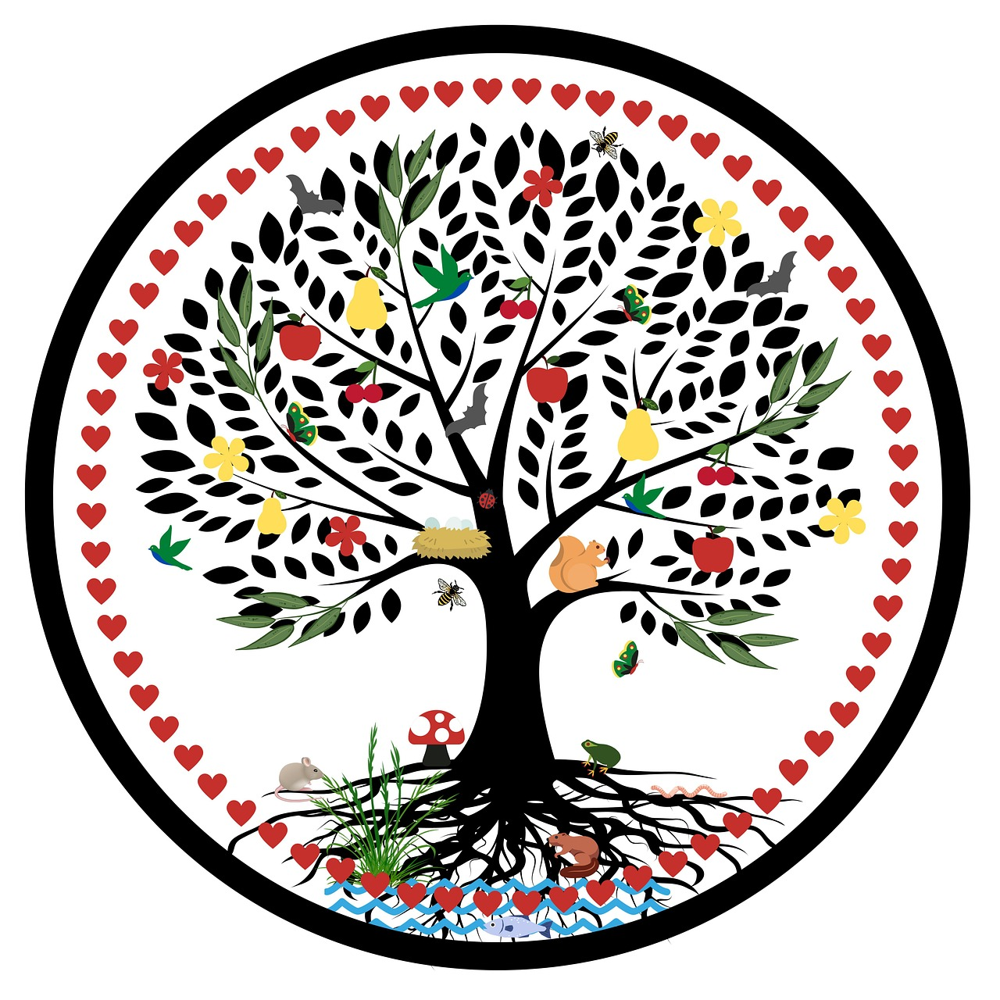

6.1 Etapas del Ciclo de Vida de un Producto Tecnológico
Esta sección presenta las fases típicas por las que pasa un dispositivo electrónico a lo largo de su existencia, desde su diseño hasta su disposición final.
El ciclo de vida se compone de varias etapas: diseño, extracción de materias primas, producción, distribución, uso y fin de vida (reutilización, reciclaje o eliminación).
En cada una de estas fases se consumen recursos naturales y energía, y se generan emisiones o residuos. Por ello, analizarlas ayuda a identificar puntos críticos de impacto ambiental.
- Diseño: Define los materiales y eficiencia del dispositivo.
- Producción: Alta demanda energética y contaminación industrial.
- Uso: Consumo energético a lo largo del tiempo.
- Fin de vida: Oportunidades de reciclaje y reutilización.
Fuente: IEA – Critical Minerals